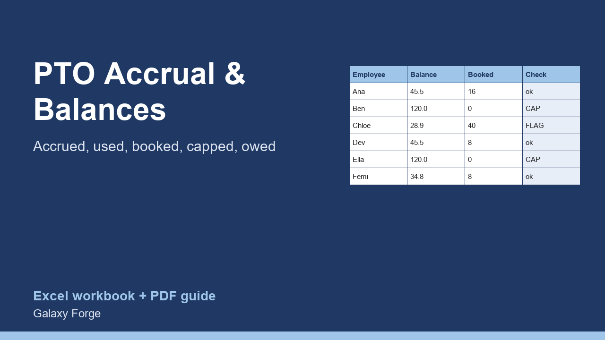

Hours accrued each pay period, hours used and booked, balances held at your policy cap, hours lost to the cap, over-booked leave flagged, and the dollar value of the leave you owe.
Small teams usually track paid time off in a calendar and someone's memory. Balances drift, people book leave they have not accrued, and nobody knows what the unused leave on the books is worth if it has to be paid out.
This tracker holds one row per employee: the balance carried in, hours accrued per pay period, pay periods so far, hours used and hours already booked. It applies your policy cap, shows the hours lost because a balance reached the cap, flags anyone whose booked leave exceeds the balance, and values each balance at the employee's hourly rate.
Summary totals accrued, used and available hours, counts the people at the cap or over-booked, and gives the total leave liability in dollars and in days.
1) On Policy, enter the number of pay periods a year, the balance cap in hours (0 for no cap) and the hours in a working day. 2) On Employees, one row each: name, balance carried in, hours accrued per pay period, pay periods worked so far this year, hours used, hours booked but not yet taken, and the hourly rate. 3) Read the flags on each row and the totals on Summary.
Price: $12, one-time. Download: pto_accrual_leave_balance_tracker.xlsx (Policy, Employees, Summary) and this guide. Works in Excel 2016 or later, Excel for Mac and Excel on the web; opens in Google Sheets and LibreOffice.
New product, listed 2026-10-29: no sales or reviews yet. Example figures in the workbook are illustrative.
This workbook is a record-keeping tool, not legal or payroll advice. Paid leave, accrual caps and payout of unused leave are regulated differently by state and country; confirm your policy against the law that applies to you.